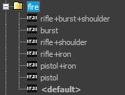

Overview
When fragments get requested, the following process determines which fragment will get used.
The Request
The request coming from the action (for programmers: see IAction::SetFragment()) contains:
- fragmentID.
- (optional) fragTags.
- (optional) option index.
- (optional) forced scopemask.
First, Figure Out ScopeMask
First the system figures out which scopes are assigned to the requested fragmentID. In other words, it looks up the scopemask of this fragmentID. Typically the fragmentID determines the scopemask by itself, but it is possible to specify 'overrides' and select different scopemasks based on the global tagstate and requested fragtags. See the file format section in the article on the controller definition file for more on how this is set up. Also, if the calling action requests a specific SubContext, the scopemask and global tags coming from this SubContext's definition will extend the ones from the original request. Finally, the scopemask can optionally be extended by the action's 'forced scopemask'.
The final scopemask now contains the list of scopes this action will be installed on, and it determines which scopes will host fragments in the next step.
Then, Install Fragments on the Scopes in the Scopemask
For each scope in the scopemask...
- The system looks up: (in the scopedef section of the controller definition)
- the scope context assigned to this scope.
- the scope tags which are assigned to this scope, if any.
- If we already assigned a fragment to another scope using this same scope context during this installation, we only continue with the installation on this scope if this scope has scope tags.
For example: Say you have scopes FullBody and Torso, both linked to the MainCharacter scopecontext. By default if the scopemask contains both of these, a fragment will only be installed on the first of them (first in the list in the controller definition). To make it possible to install different fragments on FullBody and Torso, you need to give the Torso scope a scope tag, for example a tag called "scopeTorso". This will make sense if you continue reading, as the scope is not used during the rest of the lookup, so to make it possible to distinguish the two separate fragments it has to be encoded in a tag somehow. - The system looks for a 'best matching fragment' in the animation database assigned to the scope context.
A 'matching fragment':- needs to contain all the current scope's scope tags, if any.
- cannot contain any tag missing from the input global and fragment-specific tagstates.
The order in which the fragments are ranked is displayed in the fragment browser if you deselect the 'folders' button. The best fragments are shown first. The following is an example in which the tag burst has prio 1 and all the other tags have prio 0. Because of that the fragment "burst" comes before the fragment "rifle+shoulder". The fragment "pistol" comes after the 3 fragments that have 2 matching tags, as they have more matching tags. The <default> (the fragment without tags) always comes last.
- If there are multiple options with the same tags, the option index is used to select the fragment. If no option index is specified, a random option is chosen.
(Note that in code the option-index starts counting at 0, but in the fragment browser and the fragmentID keys in the previewer the option index is 1-based. In code a random option index is a random number which is typically outside of the range of the option indices. An option is chosen by dividing the number by the number of options and the remainder is the actual option index used).